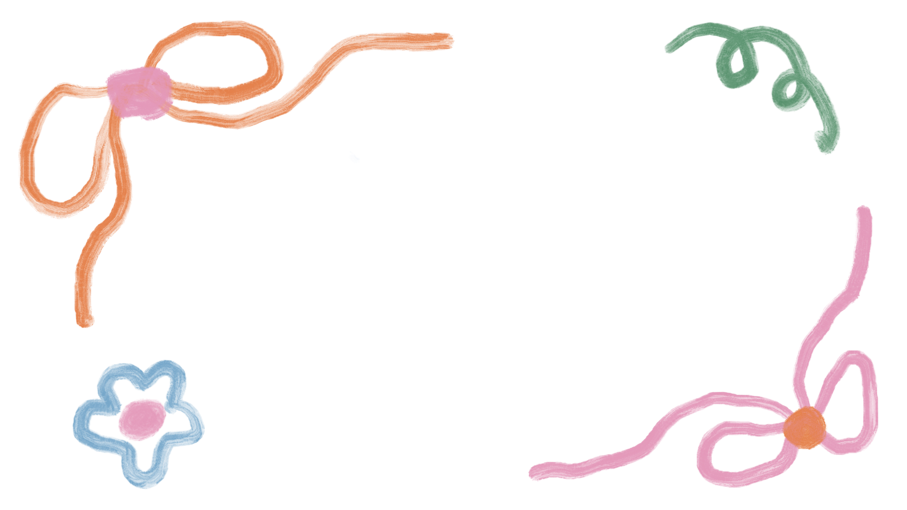
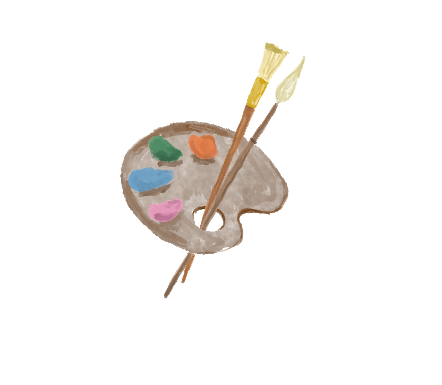
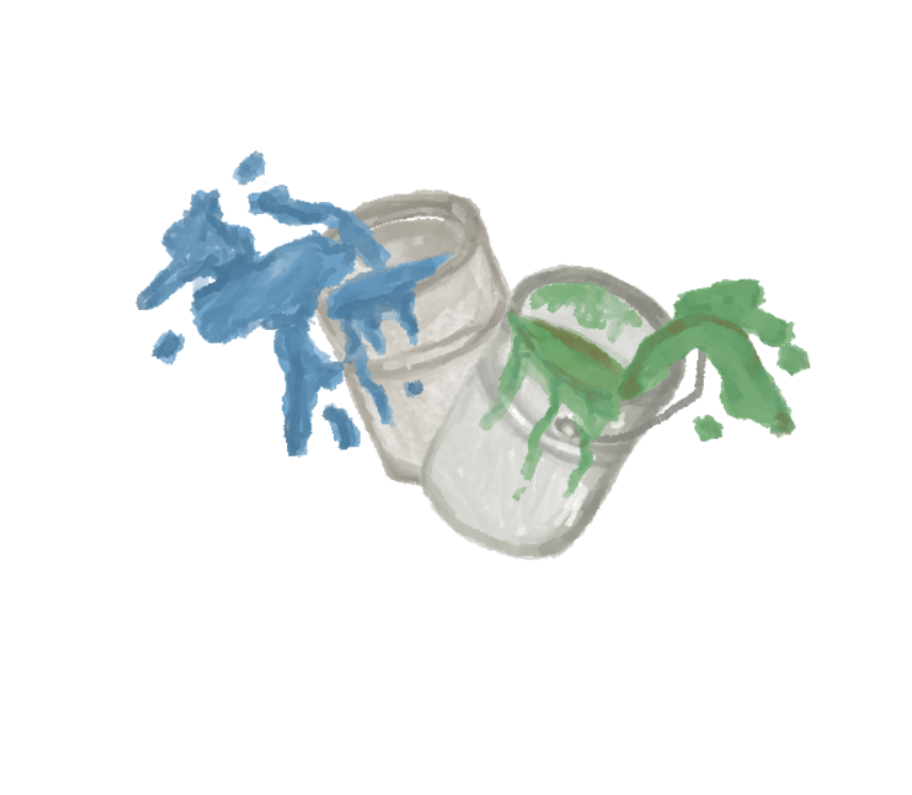
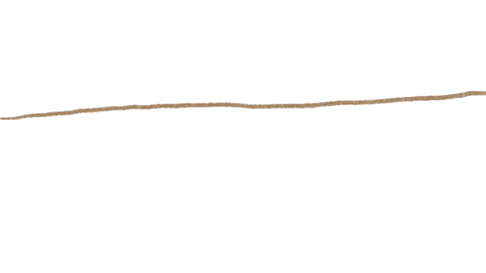
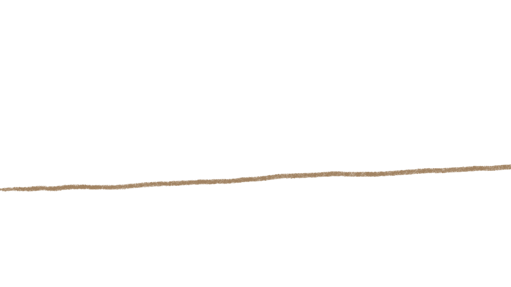
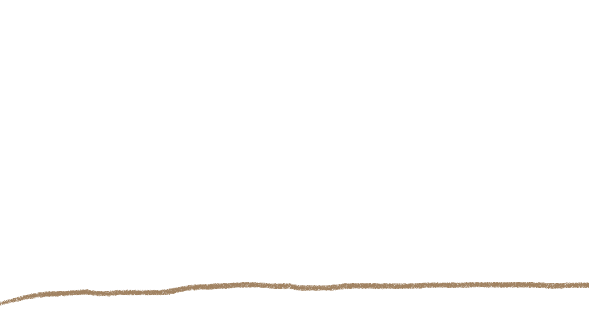
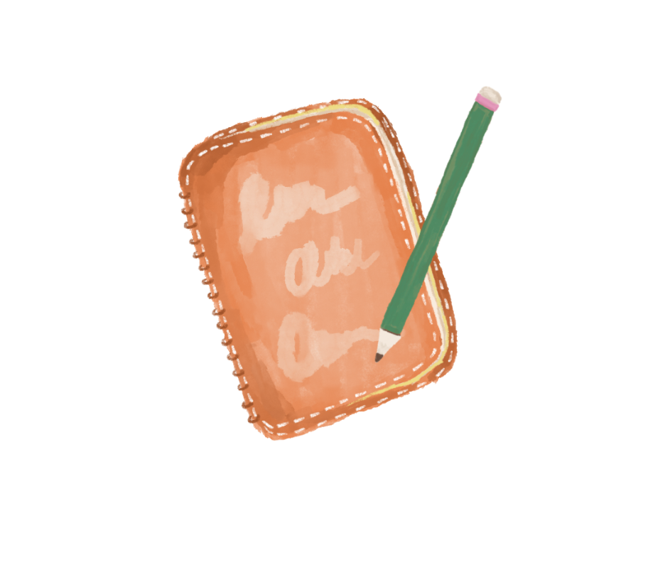

"การวาดรูป"
ช่วยระบายความรู้สึกนึกคิดที่ไม่สามารถพูดออกมาได้
สื่อสารแทนคำพูด

ลองมาวาดรูปกับเราดูสิ👈🏼
"การจัดดอกไม้"
เสริมสร้างสมาธิ มีความจดจ่อ
ทำให้คลายเครียดและความวิตกกังวลน้อยลง
ลองมาจัดดอกไม้กับเรา👈🏼
"การปาสี"
ช่วยให้คลายเครียด ระบายอารมณ์
มาลองปาสีกับเรา👈🏼

  
"การเขียนระบาย"
ช่วยระบายความรู้สึกนึกคิดที่ไม่สามารถพูดออกมาได้
สื่อสารแทนคำพูด
มาระบายความรู้สึกกับเรา👈🏼
